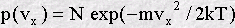
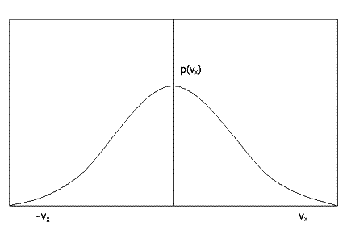

The concept of a distribution function is at the heart of statistical mechanics. The energy distribution function, for example, describes how the atoms in a system share out the energy between them. In mathematical terms it defines the probability of finding an atom with a given amount of energy. (Strictly speaking the distribution function defines the probability density - the probability of a molecule possessing an energy in a very narrow energy range.)
Imagine a system composed of many identical atoms, under normal circumstances it will be found that different individual atoms will possess different amounts of energy. This is inevitable because atoms are constantly colliding and exchanging energy with each other, and just as money ends up unevenly distributed among a population of people, energy ends up unevenly shared between molecules: most will have very little, some will have a lot. The distribution function expresses this mathematically.
The earliest example of a distribution function in science was the Maxwell velocity distribution function for the molecules in a gas. By an ingenious argument Maxwell (in 1860) showed that the distribution function in this case is a well known bell-shaped function called a Gaussian:


This function shows immediately that molecules with very large velocities are not very common, (see how the function approaches zero at large positive and negative velocities) but molecules with small velocities are common. Also the symmetry of this function shows that positive and negative velocities are equally probable. It follows that the average velocity of the molecules in a gas is zero. (This must be so, otherwise the air molecules in a room might suddenly all leap to one side, creating a vacuum at one end!) Incidentally, the average speed of a molecule (as opposed to its velocity) is not zero - why do you think this is?
The distribution function is central to statistical mechanics because once it has been determined, all the important properties of the system in bulk can be calculated, without worrying about what individual molecules may be doing.